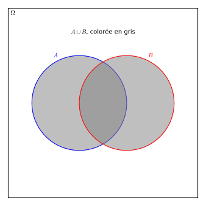
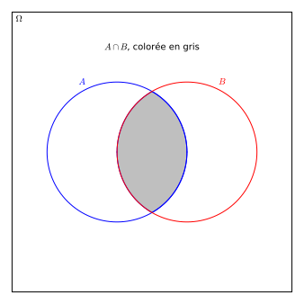
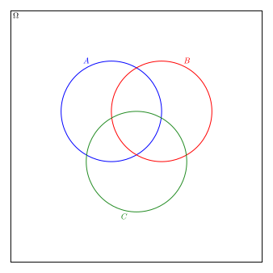

Il est possible de combiner des ensembles de différentes manières. On pourrait vouloir créer à partir de deux ensembles \(A\) et \(B\) un nouvel ensemble qui contiendrait tous les éléments qui sont dans \(A\) ou \(B\text{,}\) ceux qui sont à la fois dans \(A\) et \(B\) et ainsi de suite. On verra que ces opérations obéissent à des propriétés particulières, qui reviendront aussi dans le chapitre 2
Dans cette section, on définit l’union, l’intersection, le produit cartésien et la différence de deux ensembles. On définit aussi le complément d’un ensemble par rapport à un ensemble univers \(\Omega\text{.}\)
Sous-section1.2.1Opérations élémentaires sur les ensembles
La première opération que l’on considère est celle qui, à partir de deux ensembles, crée un nouvel ensemble dont les éléments sont dans au moins l’un des deux ensembles. On l’appelle l’union.
Définition1.2.1.L’union de deux ensembles.
Soit \(A\) et \(B\) des ensembles quelconques. L’union de \(A\) et \(B\text{,}\) notée \(A\cup B\) est l’ensemble qui contient tous les éléments qui sont dans \(A\) ou dans \(B\text{,}\) potentiellement les deux:
\begin{equation*}
A\cup B=\{c~|~ c\in A \text{ ou } c\in B\}\text{.}
\end{equation*}
Le mot « ou » n’a pas la même signification ici que dans la langue usuelle. On parle d’un « ou » inclusif. L’opération qui crée un ensemble dont les éléments sont dans \(A\) ou dans \(B\text{,}\) mais pas les deux est appelée la différence symétrique (voir exercice 1.2.4.5). C’est l’équivalent d’un « ou » exclusif.
L’union est \(A\cup B=\{a,b,c,d,e,1,2\}\text{.}\) À remarquer qu’on ne met qu’une fois les éléments, comme le veut la définition d’un ensemble.
La deuxième opération est celle qui, à partir de deux ensembles, crée un nouvel ensemble dont les éléments sont simultanément dans \(A\) et \(B\text{.}\) On l’appelle l’intersection.
Définition1.2.3.L’intersection de deux ensembles.
Soit \(A\) et \(B\) des ensembles quelconques. L’intersection de \(A\) et \(B\text{,}\) notée \(A\cap B\) est l’ensemble qui contient tous les éléments qui sont dans \(A\) et dans \(B\text{:}\)
\begin{equation*}
A\cap B=\{c~|~ c\in A \text{ et } c\in B\}\text{.}
\end{equation*}
Deux ensembles dont l’intersection est vide sont dits disjoints.
L’union et l’intersection de deux ensembles sont illlustrées à la figure 1.2.5.


Figure1.2.5.L’union (à gauche) et l’intersection (à droite) de deux ensembles \(A\) et \(B\)
L’union de deux ensembles est en quelque sorte une addition sur ces ensembles et l’intersection est une sorte de multiplication. Il y a quelques subtilités et différences, mais les propriétés de ces opérations, énoncées à la sous-section 1.2.2 iront dans ce sens. On définit maintenant la différence entre deux ensembles.
Définition1.2.6.La différence de deux ensembles.
Soit \(A\) et \(B\) deux ensembles. La différence entre \(A\) et \(B\text{,}\) notée \(A-B\) (\(A\) moins \(B\)) est un ensemble dont les éléments sont tous dans \(A\text{,}\) mais pas dans \(B\text{:}\)
La différence est parfois aussi notéé \(A\backslash B\) et on dit aussi \(A\) sauf \(B\text{.}\) On préfèrera la notation \(A-B\text{,}\) car elle se conforme avec celle utilisée par Sage.
Pour l’ensemble \(A-B\text{,}\) on retranche les éléments de \(A\) qui sont aussi dans \(B\text{.}\) Il reste \(A-B=\{a,b\}\text{.}\)
Pour ce qui est de \(B-A\text{,}\) on obtient \(B-A=\{1,2,e\}\text{.}\)
Lorsqu’un ensemble est vu comme un sous-ensemble d’un ensemble univers \(\Omega\text{,}\) on donne un nom particulier aux éléments qui sont dans \(\Omega\text{,}\) mais pas dans \(A\text{.}\) C’est le complément de \(A\text{.}\)
Définition1.2.8.Le complément d’un ensemble.
Soit \(A\) un ensemble à l’intérieur d’un ensemble univers \(\Omega\text{.}\) On apelle le complément de \(A\) l’ensemble des éléments de \(\Omega\) qui ne sont pas dans \(A\) et on le note:
On considère les ensembles \(A=\{0,2,4,6,8,10\}\) et \(B=\{n\in \N ~|~ n\leq 7\}\text{.}\) On cherche à décrire les compléments de \(A\) et \(B\) par rapport aux ensembles \(\Omega_1=\{n\in \N ~|~ n\leq 10\}\) et \(\Omega_2=\N\text{.}\)
On commence par trouver les compléments par rapport à l’ensemble univers \(\Omega_1\text{.}\) Pour \(A\text{,}\) on remarque que les éléments sont les nombres pairs plus petit ou égaux à \(10\text{.}\) Dans \(\Omega_1\text{,}\) son complément sera alors \(A^c=\{1,3,5,7,9\}\text{.}\) Pour \(B\text{,}\) on cherche tous les nombres naturels qui sont inférieurs ou égaux à \(10\) (donc dans \(\Omega_1\)), mais pas inférieurs ou égaux à \(7\) (donc dans \(B\)). Il reste donc \(B^c=\{8,9,10\}\text{.}\)
Maintenant pour \(\Omega_2\text{,}\) on observe que l’ensemble est infini. On pourrait écrire \(A^c=\{1,3,5,7,9,11,12,13,14,15,\ldots\}\text{,}\) mais comme la suite logique est en deux parties (d’abord, les impairs inférieurs à \(10\text{,}\) puis tous les nombres naturels plus grand que \(10\)), on pourrait préférer l’écrire en deux partie:
Une dernière opération sur les ensembles que l’on considère est le produit cartésien. Celle-ci sera particulièrement utile pour définir d’autres concepts de manières adéquates. On introduit dans un premier temps la notion de paires ordonnées.
Définition1.2.10.Paire ordonnée.
Une paire ordonnée, ou couple, est une collection de deux objets dont l’ordre est important. On la note \((a,b)\) avec \(a,b\) des objets quelconques. Pour deux paires ordonnées \((a_1,b_1),(a_2,b_2)\text{,}\) on a \((a_1,b_1)=(a_2,b_2)\) si et seulement si \(a_1=a_2\) et \(b_1=b_2\text{.}\)
Définition1.2.11.Le produit cartésien.
Soit \(A\) et \(B\) deux ensembles. Le produit cartésien de \(A\) par \(B\text{,}\) noté \(A\times B\) est l’ensemble de toutes les paires ordonnées \((a,b)\) formées à partir des éléments des ensemble \(A,B\text{:}\)
\begin{equation*}
A\times B=\{(a,b)~|~a\in A\text{ et }b\in B\}\text{.}
\end{equation*}
On doit énumérer toutes les paires ordonnées possibles. On verra au chapitre 4 comment compter le nombre de paires. Voici une méthode simple pour les énumérer sans en oublier lorsque les ensembles sont finis.
On prend le premier élément de \(A\) et on crée toutes les paires ordonnées possibles contenant cet élément.
On répète avec les autres éléments de \(A\) jusqu’à épuisement de l’ensemble \(A\text{.}\)
On a donc \(A\times B=\{(a,0),(a,1),(a,2),(b,0),(b,1),(b,2)\}\text{.}\)
Sous-section1.2.2Propriétés des opérations élémentaires
Les opérations définies à la sous-section précédente peuvent interagir de plusieurs manières entre elles et être combinées. On peut les démontrer de plusieurs manières. On en présente deux ci-dessous. On donne la liste des propriétés dans un premier temps et on effectue la démonstration de deux d’entre elles par la suite. Les exercices complèteront les preuves. Pour chaque propriété, \(A,B,C\) sont des ensembles quelconques et \(\Omega\) est un ensemble univers avec \(A\subseteq \Omega\text{.}\)
Liste1.2.13.Propriétés des opérations sur les ensembles
Les propriétés d’identité:
\(\displaystyle A\cup \emptyset =A\)
\(\displaystyle A\cap \Omega =A\)
Ajouter le vide à \(A\) ne change pas \(A\text{,}\) et comme \(A\subseteq \Omega\text{,}\) l’intersection avec \(\Omega\) redonne \(A\text{.}\)
Les propriétés d’idempotence:
\(\displaystyle A\cup A =A\)
\(\displaystyle A\cap A =A\)
Les propriétés de domination:
\(\displaystyle A\cup \Omega=\Omega\)
\(\displaystyle A\cap \emptyset=\emptyset\)
Les propriétés de complémentarité et de complétude:
\(\displaystyle (A^c)^c=A\)
\(\displaystyle A\cup A^c=\Omega\)
\(\displaystyle A\cap A^c=\emptyset\)
Les propriétés d’absorption:
\(\displaystyle A\cup(A\cap B)=A\)
\(\displaystyle A\cap(A\cup B)=A\)
Les propriétés de commutativité:
\(\displaystyle A\cup B=B\cup A\)
\(\displaystyle A\cap B=B\cap A\)
Les propriétés d’associativité:
\(\displaystyle A\cup (B\cup C)=(A\cup B)\cup C\)
\(\displaystyle A\cap (B\cap C)=(A\cap B)\cap C\)
Ceci fait en sorte qu’on peut écrire \(A\cup B\cup C\) ou \(A\cap B\cap C\) sans aucun souci de clarté, l’ordre n’étant pas important.
Ici par contre, les parenthèses sont importantes pour préciser quelles des deux opérations on veut effectuer en premier.
Les lois de De Morgan:
\(\displaystyle (A\cap B)^c=A^c\cup B^c\)
\(\displaystyle (A\cup B)^c=A^c\cap B^c\)
Beaucoup de ces propriétés sont intuitives quand on prend le temps d’y réfléchir un instant. L’analogie de l’addition et de la multiplication mentionnée plus tôt faisait référence aux propriétés de commutativité, d’associativité et de distributivité avec une subtilité/différence à trouver! On démontre la propriété 1.2.13:7 ci-dessous afin d’illustrer deux techniques de preuves utilisées dans la théorie des ensembles.
Proposition1.2.14.L’union et l’intersection ont la propriété d’associativité.
Pour démontrer l’identité de l’union, on utilise une table d’appartenance. Ce type de table reviendra dans la section 2.1 (sous le nom de table de vérité). Voici comment remplir une telle table.
Sur la première ligne, on met tous les ensembles pertinents à notre égalité, en commençant par les ensembles les plus simples à la gauche.
En fonction du nombre d’ensembles seuls, on remplit les lignes sous les premières colonnes (ne contenant qu’un ensemble seul) avec des « non » (signifiant que l’élément n’est pas dans l’ensemble) ou « oui » (signifiant l’appartenance de l’élément à l’ensemble) afin d’obtenir toutes les combinaisons possibles.
On remplit le reste de la table en utilisant la définition des opérations utilisées.
L’égalité est vrai si les colonnes correspondant aux membres de part et d’autre de l’égalité sont identiques.
Voici la table pour l’identité \(A\cup(B\cup C)=(A\cup B)\cup C\)
Table1.2.15.Table d’appartenance pour \(A\cup(B\cup C)=(A\cup B)\cup C\)
On démontre l’identité de l’intersection avec le concept de sous-ensemble et d’égalité: si \(E,F\) sont des ensembles tels que \(E\subseteq F\) et \(F\subseteq E\text{,}\) alors \(E=F\text{.}\) Pour ce faire, on commence par montrer que \(A\cap(B\cap C)\subseteq (A\cap B)\cap C\text{.}\)
On veut montrer qu’un élément arbitraire de \(A\cap(B\cap C)\) sera aussi dans \((A\cap B)\cap C\text{.}\) Pour cela, il peut-être utile de transposer l’ensemble en mots. Soit \(a\in A\cap(B\cap C)\text{.}\) Alors l’élément \(a\) est dans l’intersection de \(A\) et de \((B\cap C)\) (en résolvant l’intersection extérieure à la parenthèse) et donc, \(a\in A\) et \(a\in (B\cap C)\text{.}\) Puisqu’on sait maintenant que \(a\in (B\cap C)\text{,}\) on peut aussi dire que \(a\in B\) et \(a\in C\text{.}\) Donc \(a\) est dans chacun des trois ensembles \(A,B,C\) (sous l’hypothèse initiale que \(a\in A\cap(B\cap C)\)).
En particulier, puisque \(a\) est dans \(A\) et \(B\text{,}\) on obtient que \(a\in (A\cap B)\text{.}\) Finalement, en utilisant le fait que \(a\in C\text{,}\) on a que \(a\in (A\cap B)\) et \(a\in C\) et donc, \(a\in (A\cap B)\cap C\text{.}\) On a bel et bien \(A\cap(B\cap C)\subseteq (A\cap B)\cap C\text{.}\)
L’idée pour montrer l’autre direction, soit que \((A\cap B)\cap C\subseteq A\cap(B\cap C)\) est identique.
Soit \(b\) un élément arbitraire de \((A\cap B)\cap C\text{.}\) Alors \(b\) est dans l’intersection de \(A\cap B\) et de \(C\text{.}\) En particulier, \(b\) est dans \(C\text{.}\) Puisque \(b\) est dans l’intersection de \(A\) et \(B\text{,}\) on voit que \(b\) est à la fois dans \(A\) et dans \(B\) (et dans \(C\text{!}\)). Comme \(b\) est à la fois dans \(B\) et dans \(C\text{,}\) il est dans leur intersection. En combinant cela avec le fait que \(b\in A\text{,}\) on obtient que \(b\) est dans l’intersection de \(A\) et \(B\cap C\text{.}\) Ainsi \(b\in A\cap(B\cap C) \text{.}\)
Comme \(A\cap(B\cap C)\subseteq (A\cap B)\cap C\) et \(A\cap(B\cap C)\supseteq (A\cap B)\cap C\text{,}\) on conclut finalement que \(A\cap(B\cap C)=(A\cap B)\cap C\text{.}\)
Questions de compréhension de la lecture1.2.3Questions de compréhension de la lecture
Ces questions sont à faire avant de venir en classe et à remettre au début du cours.
1.
Soit \(A=\{a,b,c,d\}\) et \(B=\{a,b,c,d,e,f,g\}\) vivant dans l’ensemble univers \(\Omega =\{l ~|~ l \text{ est une lettre de l'alphabet comprise entre } a \text{ et } j \}\text{.}\) Déterminer:
(a)
\(A\cup B\)
(b)
\(A\cap B\)
(c)
\(A- B\)
(d)
\(B-A\)
(e)
\(A^c\)
(f)
\(B^c\)
2.
Dessiner l’ensemble \(A-B\) sur le diagramme de Venn de la figure suivante.
Figure1.2.16.Un diagramme de Venn vide
3.
Déterminer le produit cartésien de \(A=\{\text{Salade repas},\text{Burger du chef},\text{La prise du jour},\text{Soupe deluxe}\}\) et \(B=\{\text{Brownie décadent},\text{Tarte succulente},\text{Gâteau alléchant}\}\text{.}\) Quel est votre élément favori de \(A\times B\text{?}\)
4.
On considère l’ensemble \(S=\{n\in \N~|~ n \text{ divise } 6\}\text{.}\)
(a)
Donner \(\mathscr{P}(S)\text{.}\)
(b)
Trouver un ensemble \(B\in\mathscr{P}(S)\) tel que \(|B|=3\)
(c)
Trouver un ensemble \(C\subseteq\mathscr{P}(S)\) tel que \(|C|=3\)
(d)
Un étudiant affirme avoir trouvé \(D\in \mathscr{P}(S)\) tel que \(|D|=6\text{.}\) Donner un exemple d’un tel ensemble ou expliquer pourquoi ce n’est pas possible.
(e)
Un étudiant affirme avoir trouvé \(E\subseteq \mathscr{P}(S)\) tel que \(|E|=6\text{.}\) Donner un exemple d’un tel ensemble ou expliquer pourquoi ce n’est pas possible.
5.
Noter toute question qui demeure suite à la lecture de la section et la résolution des exercices ci-dessus ou toute précision/clarification à apporter. Note: cette question est facultative.
Exercices1.2.4Exercices
À faire en classe.
Ces exercices sont faits pour travailler en classe. Ils servent à approfondir les notions de la section et à atteindre les objectifs d’apprentissage plus avancés.
1.
Soit \(A=\{0,1,2,3,4,5\}\text{,}\)\(B=\{0,3,6,9\}\) et \(\Omega=\{n\in \N~|~ n\leq 10\}\text{.}\) Déterminer:
On a vu les propriétés de distributivité pour combiner l’union et l’intersection. Cet exercice vise à montrer d’une autre manière que les parenthèses sont importantes.
(a)

Figure1.2.17.Un diagramme de Venn vide
Sur des diagrammes de Venn comme celui de la figure 1.2.17, illustrer les ensembles suivants:
(i)
\(A\cup (B\cap C)\)
(ii)
\((A\cup B)\cap C\)
(b)
Expliquer pourquoi, à partir du résultat de la partie précédente, il n’est pas nécessaire de montrer que \(A\cap(B\cup C)\neq (A\cap B)\cup C\text{.}\)
Interchanger les rôles de \(A\) et \(C\) et utiliser la commutativité.
3.
Sur un diagramme de Venn comme celui de la figure 1.2.17, illustrer les ensembles suivants.
(a)
\(A^c\cap B\cap C\)
(b)
\(A^c\cap B^c\cap C\)
(c)
\(A^c\cap B^c\cap C^c\)
(d)
Utiliser les parties précédentes et un argument de symétrie pour illustrer:
(i)
\(A\cap B^c\cap C\)
et \(A\cap B\cap C^c\text{.}\)
(ii)
\(A^c\cap B\cap C^c\)
et \(A\cap B^c\cap C^c\text{.}\)
4.
Pour chaque diagramme de Venn ci-dessous, décrire l’ensemble ombragée en fonction des ensembles \(A,B,C\) et des opérations élémentaires d’union, d’intersection et de complément.
Soit \(A\) et \(B\) deux ensembles quelconques. On définit la différence symétrique de \(A\) et \(B\text{,}\) note \(A\oplus B\) 1 , comme l’ensemble des éléments qui sont dans \(A\) ou \(B\text{,}\) mais pas les deux.
(a)
Donner la différence symétrique des ensembles \(A,B\) de l’exercice 1.2.4.1.
Il y a une infinité de solutions. L’une d’elle est \(A=\{1,2,3,4\}\) et \(B=\{5,6,7\}\text{.}\) On a alors \(|A\cap B|=0\text{.}\) Ceci est vrai pour toutes les solutions.
(b)
Donner deux ensembles \(A\) et \(B\) tels que \(|A|=4,|B|=3\) et \(|A\cup B|=5\text{.}\) Que vaut \(|A\cap B|\text{?}\)
Il y a une infinité de solutions. L’une d’elle est \(A=\{1,2,3,4\}\) et \(B=\{3,4,5\}\text{.}\) On a alors \(|A\cap B|=2\text{.}\) Ceci est vrai pour toutes les solutions.
(c)
Si \(A=\{a,b,c\}\) et que \(|B|=6\text{,}\) quelles sont les valeurs possibles pour \(|A\cup B|\text{?}\) Donner des exemples d’ensembles \(B_1,B_2\) tel que \(|A\cup B_1|\) est égale à la plus petite valeur possible et \(|A\cup B_2|\) est égale à la plus grande valeur possible.
Lorsque calcul \(|A|+|B|\text{,}\) on compte les éléments de \(|A\cap B|\) deux fois (une fois dans la valeur de \(|A|\) et une fois dans la valeur de \(|B|\)). On doit donc soustraire \(|A\cap B|\) à \(|A|+|B|\text{.}\) pour obtenir
8.
Au Cégep Gérald-Godin à l’automne \(2021\text{,}\) il y a présentement \(25\) étudiants inscrits en mathématiques discrètes et \(36\) étudiants inscrits en chimie générale. De plus, \(14\) étudiants suivent les deux cours. Combien d’étudiants sont inscrits dans au moins l’un de ces cours?
On commence par montrer que \(A\cap (B\cup C) \subseteq (A\cap B)\cup(A\cap C)\text{.}\) On considère un élément \(x \in A\cap (B\cup C)\text{.}\) Ainsi, par la définition de l’intersection, \(x\in A\) et \(x \in (B\cup C)\text{.}\) Par la définition de l’union, on a que \(x\in B\) ou \(x\in C\text{.}\)
Si \(x \in B\text{,}\) alors \(x \in (A\cap B)\text{.}\) Si \(x \in C\text{,}\) alors \(x \in (A\cap C)\text{.}\) Par ce qui précède, \(x \in (A\cap B)\cup(A\cap C)\text{.}\) On a donc montré que \(A\cap (B\cup C) \subseteq (A\cap B)\cup(A\cap C)\text{.}\)
On montre ensuite que \((A\cap B)\cup(A\cap C) \subseteq A\cap (B\cup C)\text{.}\) On considère un élément \(x \in (A\cap B)\cup(A\cap C)\text{.}\) Ainsi, par la définition de l’union, \(x\in (A\cap B)\) ou \(x \in(A\cap C)\text{.}\) Dans les deux cas, par la définition de l’intersection, on a que \(x \in A\text{.}\)
Si \(x \in (A\cap B)\text{,}\) alors \(x \in B\text{,}\) et donc \(x \in (B\cup C)\text{.}\) Si \(x \in(A\cap C)\text{,}\) alors \(x \in C\) et donc \(x \in (B\cup C)\text{.}\) Dans les deux cas, on a \(x \in A\cap(B\cup C)\text{.}\) On a donc montré que \((A\cap B)\cup(A\cap C) \subseteq A\cap (B\cup C) \text{.}\)
Puisque qu’on a montré que \(A\cap (B\cup C) \subseteq (A\cap B)\cup(A\cap C)\) et \((A\cap B)\cup(A\cap C) \subseteq A\cap (B\cup C)\text{,}\) on a que \(A\cap (B\cup C) = (A\cap B)\cup(A\cap C)\text{.}\)
10.
Soit \(A,B\) et \(C\) de ensembles. En utilisant des arguments d’inclusion, démontrer les relations suivantes:
Si \(a\in (A-B)-C\text{,}\) alors \(a \in (A-B)\text{,}\) mais \(a \notin C\text{.}\) Puisque \(a\in A-B\text{,}\) alors \(a\in A\text{.}\) Ainsi, \(a\in A\text{,}\) mais \(a\notin C\text{.}\) Par définition, \(a\in A-C\text{.}\)
On sait que \(\emptyset \subseteq (A-C)\cap (C-B)\text{.}\)
Soit \(x \in (A-C)\cap (C-B)\text{,}\) alors \(x\in A-C\) et \(x\in C-B\text{.}\) Puisque \(x\in A-C\text{,}\) alors \(x\notin C\text{,}\) mais puisque \(x\in C-B\text{,}\) alors \(x\in C\text{.}\) Puisque \(x\) ne peut pas être à la fois un élément de \(C\) et ne pas être un élément de \(C\text{,}\) un tel \(x\) ne peut pas exister.
Par ce qui précède, on a que \((A-C)\cap (C-B)\subseteq \emptyset\text{,}\) et donc \((A-C)\cap (C-B)=\emptyset\text{.}\)
Si \(a\in\ (A - B) \cup (C - B)\text{,}\) alors \(a\in\ A-B\) ou \(a\in\ C-B\text{.}\) Si \(a\in\ A-B\text{,}\) alors \(a\in\ A\) et \(a\notin\ B\text{.}\) Ainsi, \(a\in\ A\cup C\text{,}\) et donc \(a\in\ (A\cup C)-B\text{.}\) De la même manière, si \(a\in\ C-B\text{,}\) on peut montrer que \(a\in\ (A\cup C)-B\text{,}\) d’où \((A-B)\cup (C-B) \subseteq (A\cup C)-B\text{.}\)
Si \(a\in\ (A\cup C)-B\text{,}\) alors \(a\in\ (A\cup C)\) et \(a\notin\ B\text{.}\) Ainsi, \(a\in\ A\) ou \(a\in\ C\text{.}\) Si \(a\in\ A\text{,}\) alors \(a\in (A-B)\text{.}\) Si \(a\in\ C\text{,}\) alors \(a\in\ C-B\text{.}\) Dans les deux cas, on a \(a\in\ (A-B)\cup (C-B)\text{,}\) d’où \((A\cup C)-B\subseteq (A-B)\cup (C-B)\text{.}\)
Par ce qui précède, on a \((A-B)\cup (C-B) = (A\cup C)-B\)
11.
Deux ensembles \(A\) et \(B\) sont donnés. Que peut-on dire sur leur relation si:
Considérer un élément \(x \in A\cap B\text{.}\) Utiliser l’égalité pour montrer que \(x \notin B.\) Conclure que l’élément \(x \in A\cap B\) ne peut pas exister.
Montrer d’abord que \(A\subseteq B\text{.}\) Ceci est équivalent à montrer que \(A-B=\emptyset\text{.}\) Considérer un élément \(a \in A-B\text{,}\) et utiliser l’égalité pour montrer que \(a \notin A\text{.}\) Conclure qu’un tel élément ne peut pas exister, et donc que \(A-B=\emptyset\text{.}\)
Utiliser un argument similaire pour montrer que \(B\subseteq A\)
Soit \(a\in\ A\oplus B\text{,}\) alors soit \(a\in\ A\) et \(a\notin\ B\) ou bien \(a\notin\ A\) et \(a \in\ B\text{.}\) Dans les deux cas, \(a\in\ B \oplus A\text{.}\) Ainsi, \(A\oplus B \subseteq B \oplus A\text{.}\)
De la même manière, on montre que \(B \oplus A \subseteq A\oplus B\text{.}\) On conclut donc que \(A\oplus B=B\oplus A\text{.}\)
D’une part, si \(a \in A\text{,}\) alors soit \(a \in B\) ou \(a \notin B\text{.}\) Si \(a \in B\) alors \(a \notin A \oplus B \text{.}\) Ainsi \(a \in \left(A\oplus B\right)\oplus B\text{,}\) car c’est un élément de \(B\text{,}\) mais pas de \(A \oplus B\text{.}\) Si \(a \notin B\text{,}\) alors \(a\in A\oplus B\text{.}\) Ainsi \(a \in \left(A\oplus B\right)\oplus B\text{,}\) car c’est un élément de \(A\oplus B\text{,}\) mais pas de \(B\text{.}\) Ainsi, on a montré que \(A\subseteq (A\oplus B)\oplus B\text{.}\)
D’autre part, si \(a \in \left(A\oplus B\right)\oplus B\text{,}\) alors soit \(a \in A\oplus B\) ou \(a\in B\text{,}\) mais pas les deux en même temps. Si \(a\in A\oplus B\) et \(a\notin B\text{,}\) alors \(a\) est un élément de \(A\) ou de \(B\text{,}\) mais on sait que \(a\notin B\text{,}\) donc \(a\) est un élément de \(A\text{.}\) Si \(a \notin A\oplus B\) et \(a \in B\text{,}\) alors \(a\) doit être un élément de \(A\text{.}\) En effet, si on avait \(a \in B\) et \(a \notin A\text{,}\) on aurait \(a \in A\oplus B\text{,}\) ce qui n’est pas le cas. Ainsi, on a montré que \((A\oplus B)\oplus B \subseteq A \text{.}\)
Puisqu’on a montré que \(A\subseteq (A\oplus B)\oplus B\) et que \((A\oplus B)\oplus B \subseteq A \text{,}\) on a montrer que que \((A\oplus B)\oplus B = A \)
Exercices supplémentaires.
14.
On considère \(S\) l’ensemble des étudiants du programme Sciences informatique et mathématiques à Gérald-Godin et \(C\) l’ensemble des étudiants de Gérald-Godin qui sont inscrits en calcul différentiel. Exprimer les ensembles suivants en fonction de \(S\) et \(C\text{.}\) Au besoin, considérer l’ensemble univers \(G\) de tous les étudiants inscrits à Gérald-Godin.
(a)
Les étudiants de Sciences informatiques et mathématiques qui suivent le cours de calcul différentiel.
(b)
Les étudiants du cours de calcul différentiel qui ne sont pas en Sciences informatiques et mathématiques.
(c)
Les étudiants de Sciences informatiques et mathématiques ou inscrits dans le cours de calcul différentiel.
(d)
Les étudiants du cégep Gérald-Godin qui ne sont pas en calcul différentiel ni en Sciences informatiques et mathéamtiques.
(e)
Les étudiants de Sciences informatiques et mathématiques ou ceux qui suivent le cours de calcul différentiel, mais qui ne sont pas en Sciences informatiques et mathématiques.
Cet exercice peut paraître bidon, mais on peut imaginer un gestionnaire informatique d’une école qui doit gérer une liste de courriels. Peut-être qu’un message précis doit être communiqué à un ensemble spécifique de personnes. On veut alors être certain de ne pas oublier quelqu’un et en même temps, on ne veut pas envoyer le message à quelqu’un qui n’a pas à le recevoir.
15.
Déterminer des ensembles \(A,B\) tels que \(A-B=\{a,h,i\},B-A=\{c\}\) et \(B\cap A=\{b,f,i\}\) ou expliquer pourquoi c’est impossible. Dans le cas où c’est possible, est-ce que la réponse est unique?
Faire un diagramme de Venn pour voir qu’une réponse unique existe.
16.
Déterminer des ensembles \(A,B\) tels que \(A-B=\{3,4,7,8\}\) et \(B\cap A=\{b,f,i\}\) ou expliquer pourquoi c’est impossible. Dans le cas où c’est possible, est-ce que la réponse est unique?
17.
Déterminer des ensembles \(A,B\) tels que \(A-B=\{rouge,vert,jaune\}\) et \(B\cap A=\{jaune, mauve, orange\}\) ou expliquer pourquoi c’est impossible. Dans le cas où c’est possible, est-ce que la réponse est unique?
18.
On va donner les démonstrations des propriétés de la liste 1.2.13 qui n’ont pas été faites dans le texte .
Soit \(A\subseteq \Omega\) un ensemble arbitraire. Démontrer les propriétés suivantes:
(a)
\(A\oplus A=\emptyset\)
(b)
\(A\oplus \emptyset=A\)
(c)
\(A\oplus \Omega=A^c\)
20.
Dans l’exercice 1.2.4.19.b, on a vu que \(A\oplus \emptyset =A\text{.}\) Expliquer pourquoi si \(A\oplus B=A\text{,}\) alors nécessairement on doit avoir \(B=\emptyset\text{.}\)
Les opérations d’union et d’intersection sont des opérations binaires, qui demandent deux ensembles qui agissent à titre d’opérandes. Parce qu’elle sont associatives, on peut généraliser ces opérations à plus de deux ensembles, possiblement même une infinité. Ainsi, si \(A_0,A_1,A_2,\ldots , A_n\) sont des ensembles, on note